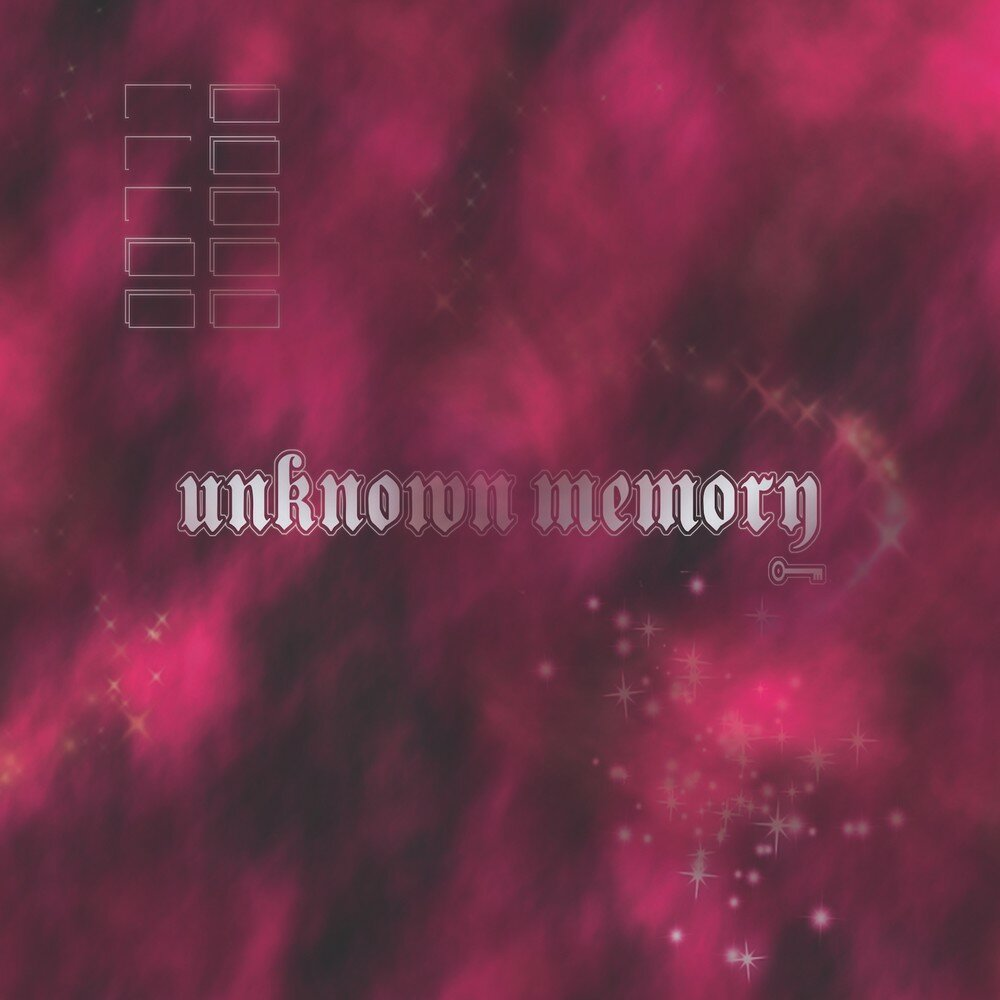
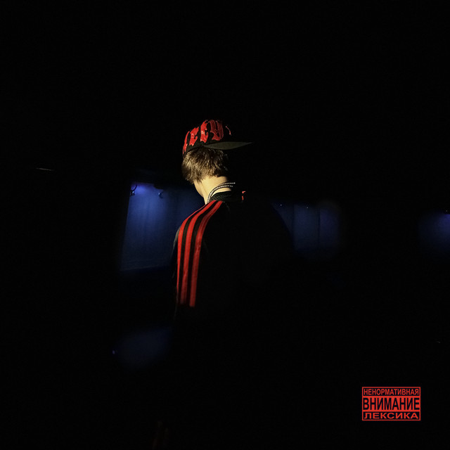
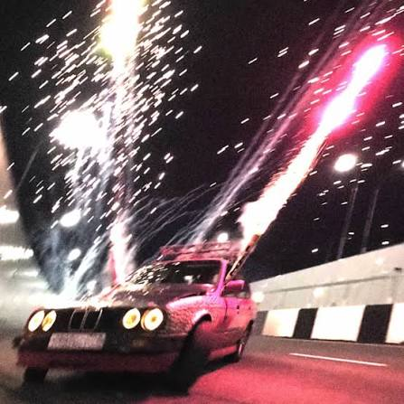
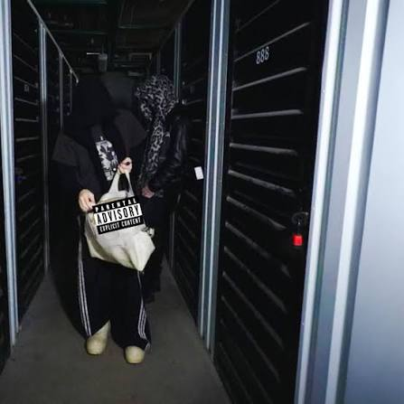
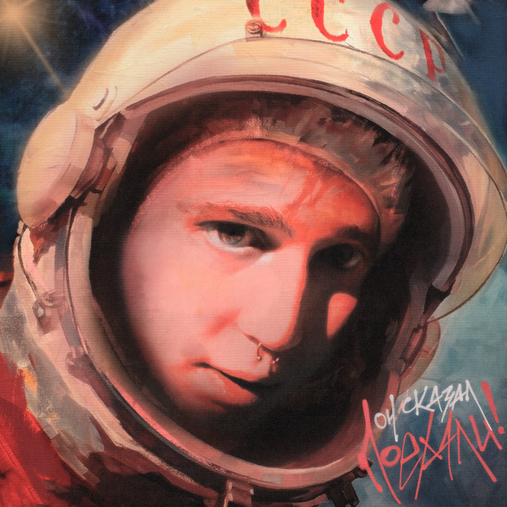
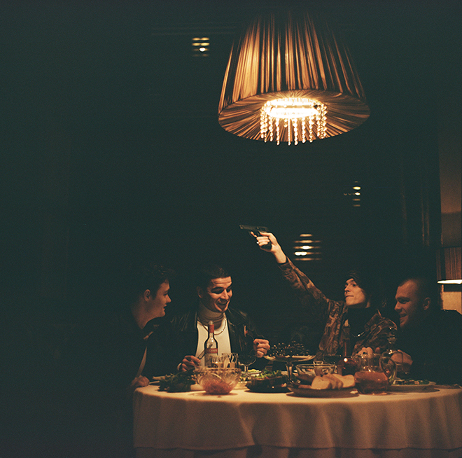
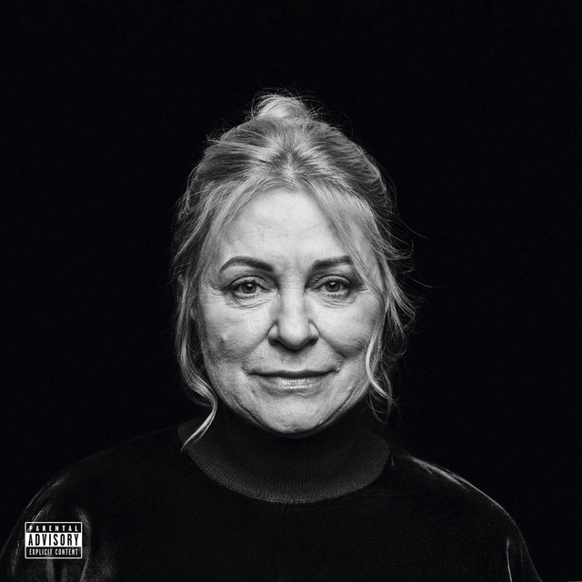
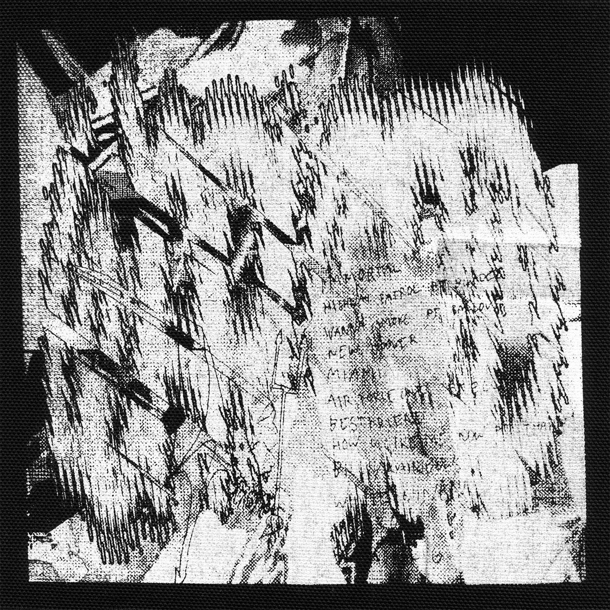

Главная Dark Lane Demo Tapes Таблица альбомов








Yung lean / альбом Unknown Memory
Unknown Memory - дебютный студийный альбом шведского рэпера Yung Lean, вышедший в 2014 году. До этого артист прославился в интернете благодаря клипу «Ginseng Strip 2002» и микстейпу Unknown Death 2002, а этот релиз стал его первой полноценной пластинкой.
Музыку для альбома создали продюсеры объединения Sad Boys - Yung Gud и Yung Sherman. Холодные синтезаторы, медленный темп и меланхоличная атмосфера сделали звучание пластинки одним из образцов клауд-рэпа.
Альбом закрепил за Yung Lean статус одной из ключевых фигур интернет-рэпа середины 2010-х и повлиял на многих молодых исполнителей, в том числе в России.
OG Buda / альбом SZN
OG Buda - московский рэпер, участник объединения Melon Music. Он известен узнаваемой манерой читки, мелодичными хуками и большим количеством совместных треков с другими артистами новой школы.
Альбом SZN продолжает фирменный стиль исполнителя: лёгкие трэп-биты, запоминающиеся припевы и треки, которые легко слушать подряд от начала до конца.
madk1d / альбом дырки в штанах
madk1d - молодой российский исполнитель из андерграундной рэп-сцены. Его музыка строится на необработанном звучании, коротких треках и откровенных текстах.
Альбом «дырки в штанах» - личная и немного ироничная работа, в которой артист рассказывает о повседневной жизни, друзьях и попытках пробиться в музыке.
madk1d, VILLIAN / альбом 8 миля
«8 миля» - совместный проект madk1d и VILLIAN. Название отсылает к знаменитому фильму с Эминемом о молодом рэпере, который пробивает себе дорогу через баттлы.
На альбоме исполнители чередуют куплеты и дополняют друг друга: каждый привносит свою подачу, а общая тема пластинки - путь к успеху и вера в себя.
Drake / альбом Dark Lane Demo Tapes
Dark Lane Demo Tapes - микстейп канадского исполнителя Drake, выпущенный 1 мая 2020 года. В него вошли треки, которые ранее утекли в сеть или публиковались в соцсетях, а также несколько новых песен.
Самым известным треком релиза стал «Toosie Slide», завирусившийся в TikTok благодаря танцу. Среди гостей на микстейпе - Future, Young Thug, Playboi Carti, Giveon и Fivio Foreign.
Микстейп вышел в преддверии альбома Certified Lover Boy.
...